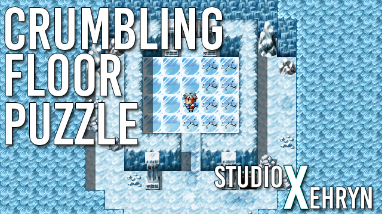
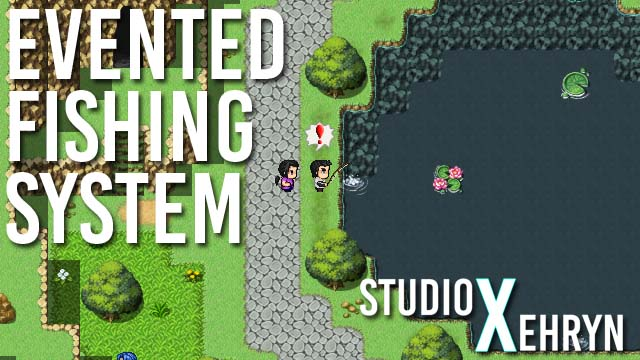

Character Spritesheets and Animations
Engine: RPG Maker VX Ace and MV
Difficulty: Easy
Function: Explanation on how character/spritesheets work in RPG Maker VX Ace and MV.
This tutorial is all about the arrangement of character spritesheets and animations, and aims to clear up any confusion or misconceptions surrounding sprites.
View Tutorial

Crumbling Floor Puzzle (Turn-Based)
Engine: RPG Maker VX Ace and MV
Difficulty: Easy
Function: A puzzle that triggers an event when all tiles have been stepped on, and each tile may only be stepped on once.
This is a tutorial on making a turn-based crumbling floor puzzle, just like the Sootopolis Gym puzzle in Pokemon Ruby/Sapphire/Emerald. If you are not familiar with the puzzle, stepping on all the floor tiles will trigger an event, however each tile may only be stepped on once. Stepping on a tile twice will drop the player into another room.
View Tutorial

Evented Fishing System
Engine: RPG Maker VX Ace
Difficulty: Easy
Function: Press the correct key during the required timeframe to succeed.
This is a tutorial on making an evented fishing system (or any sort of reflex event), as seen in Gate of Providence!
View Tutorial